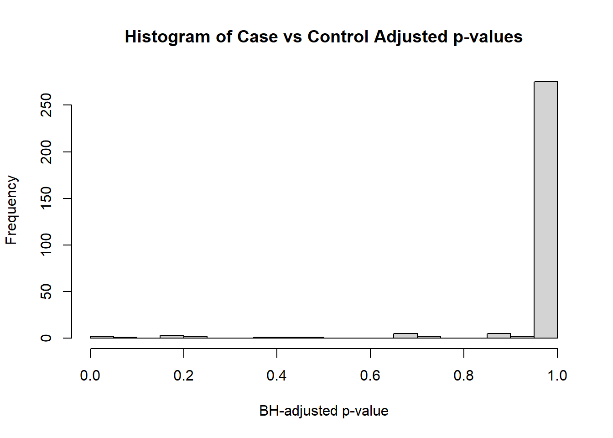

3.2 p-value Histograms
hist(res1$P.Value,
breaks = seq(0, 1, 0.05),
main = "Histogram of Case vs Control p-values",
xlab = "p-value")
The histogram is fairly uniform, which means that only a few of the features are likely to be significant after adjustment.
hist(res1$adj.P.Val,
breaks = seq(0, 1, 0.05),
main = "Histogram of Case vs Control Adjusted p-values",
xlab = "BH-adjusted p-value")
After adjustment, only 2 proteins are significantly-different between the case and control groups.